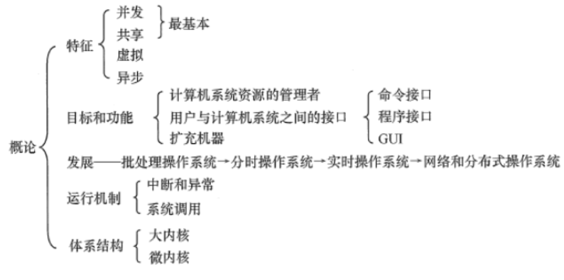
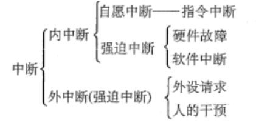
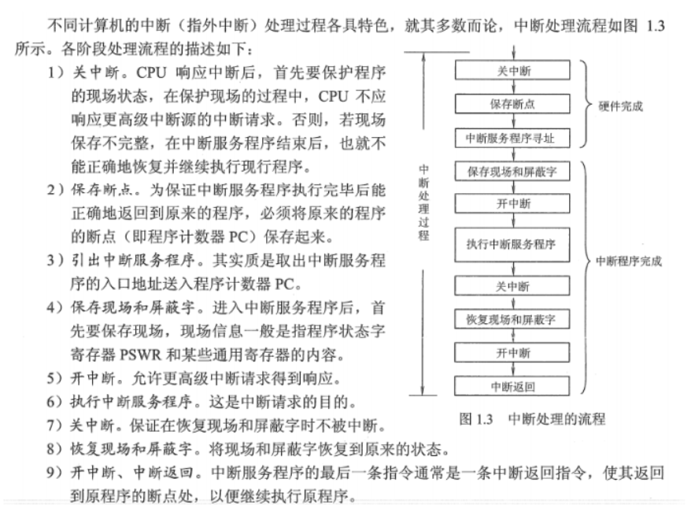
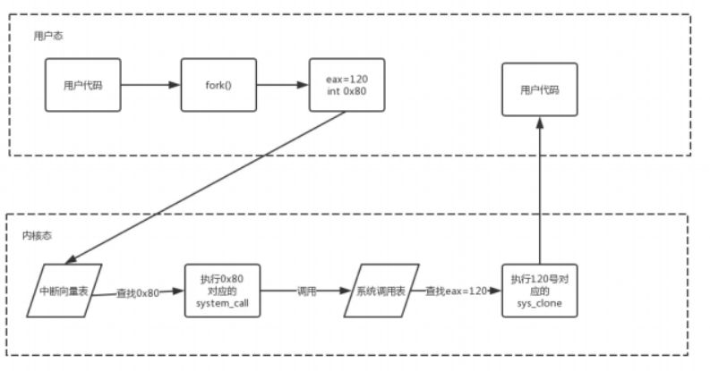
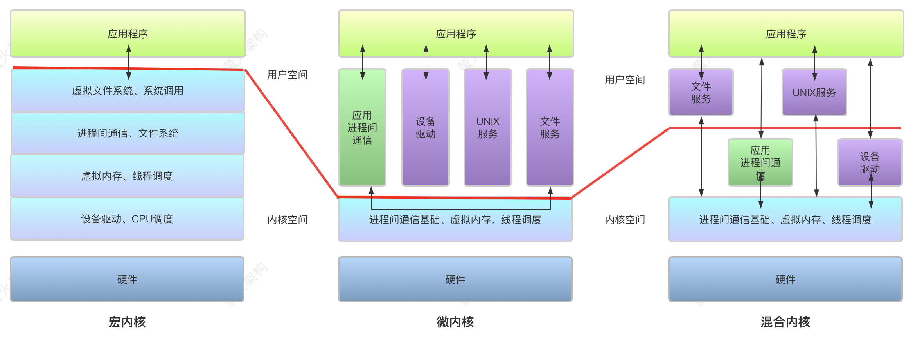
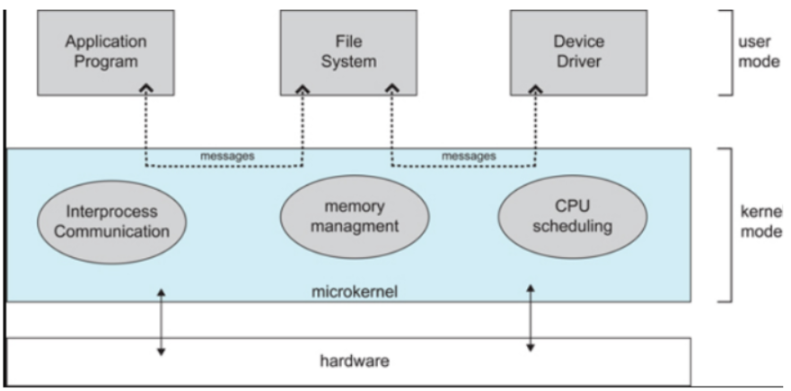

操作系统面经1：计算机系统概述

1 操作系统的目标和功能（什么是操作系统？）
1.1 操作系统是计算机资源的管理者
- 处理机管理（进程控制、进程同步、进程通信、死锁处理、处理机调度）
- 存储器管理（提高内存利用率，内存的分配与回收、地址映射、内存保护与共享、内存扩充）
- 文件管理（计算机中的信息都是以文件的形式存在的）
- 设备管理（完成用户的I/O请求，方便用户使用设备、并提高设备的利用率）
1.2 操作系统为用户提供使用计算机硬件系统的接口
- 命令接口（用户通过控制台或终端输入操作命令，向系统提供各种服务要求）
- 程序接口（由 系统调用 组成，用户在程序中使用这些系统调用来请求操作系统为其提供服务）
- 图形接口 最常见的 图形用户界面GUI （最终还是通过调用程序接口实现的）
1.3 操作系统用作扩充机器
没有任何软件支持的计算机称为裸机，实际呈现在用户面前的计算机系统是经过若干层软件改造的计算机。
操作系统将裸机改造成功能更强、使用更方便的机器。我们将覆盖了软件的机器称为扩充机器或虚拟机。
2 操作系统的运行机制？
2.1 内核程序和应用程序(内核态和用户态)
在计算机系统中，通常CPU执行两种不同性质的程序：一种是操作系统内核程序；另一种是用户自编程序或系统外层的应用程序。
内核程序是应用程序的”管理者”。“管理程序“可以执行一些特权指令，而”被管理程序“出于安全考虑不能执行这些指令。
所谓特权指令，是指计算机中不允许用户直接使用的指令，如：I/O指令、置中断指令，存取用于内存保护的寄存器，送程序状态字到程序状态字寄存器等指令。
操作系统在具体实现上划分了用户态（目态）和核心态（管态），以严格区分两类程序。
2.2 层次式结构
操作系统的各项功能分别被设置在不同的层次上。一些与硬件关联较紧密的模块，诸如时钟管理、中断管理、设备驱动等处于最底层。其次是运行频率较高的程序，诸如进程管理、存储管理和设备管理等。
上面的这两部分内容构成了操作系统的内核，这部分内容的指令操作工作在核心态。
2.3 内核
内核是计算机上配置的底层软件，是计算机功能的延伸，包括以下4个方面的内容：
-
时钟管理
时钟的第一功能是计时，操作系统需要通过时钟管理，向用户提供标准的系统时间。其次，通过时钟中断的管理，可以实现进程的切换。
在分时操作系统中，采用时间片轮转调度的实现；
在实时系统中，按截至时间控制运行的实现；
在批处理系统中，通过时钟管理来衡量一个作业的运行程度等。
-
中断机制
引入中断技术的初衷是提高多道程序运行环境中CPU的利用率，主要针对外部设备。后来逐步得到发展，形成了多种类型，成为操作系统各项操作的基础。如，键盘或鼠标信息的输入、进程的管理和调度、系统功能的调用、设备驱动、文件访问等。都依赖于中断机制。
可以说，现代操作系统是靠中断驱动的软件。中断机制中，只有一小部分功能属于内核，负责保护和恢复中断现场的信息，转移控制权到相关的处理程序。这样可以减少中断的处理时间，提高系统的并行处理能力。
-
原语
操作系统底层是一些可被调用的公用小程序，它们各自完成一个规定的操作，其特点是：
- 它们处于操作系统的最底层，是最接近硬件的部分
- 这些程序的运行具有原子性，其操作只能一气呵成
- 这些程序的运行时间都较短，而且调用频繁
-
系统控制的数据结构及处理
系统中用来登记状态信息的数据结构很多，比如：作业控制块、进程控制块、设备控制块、各类链表等。为了实现有效的管理，系统需要一些基本的操作，常见的操作有以下三种：
- 进程管理：进程状态管理、进程调度和分配、创建和撤销进程控制块等
- 存储器管理：存储器的空间分配和回收、内存信息保护程序、代码对换程序等
- 设备管理：缓冲区管理、设备分配和回收等
3 中断和异常？
3.1 中断的引入
中断的引入是为了支持CPU和设备之间的并行操作。
中断也称外中断，指来自CPU执行指令以外的事件的发生，如设备发出的I/O结束中断、时钟中断等。这一类中断通常是与当前执行的指令无关的事件。
3.2 异常的引入
异常的引入是表示CPU执行指令本身时出现的问题。
异常也称内中断、例外或陷入，指源自CPU执行指令内部的事件，如程序的非法操作码、地址越界、算术溢出、缺页异常等。对异常的处理一般要依赖与当前程序的运行现场，不能被屏蔽。
3.3 中断和异常的联系与区别

3.4 中断执行的流程

以上是多重中断的流程，其中，1~3步是由硬件（中断隐指令）完成的；4-9步是由中断服务程序完成的。
4 系统调用？
计算机系统的各种硬件资源是有限，为了更好的管理这些资源，进程是不允许直接操作的，所有对这些资源的访问都必须有操作系统控制。也就是说操作系统是使用这些资源的唯一入口，而这个入口就是操作系统提供的系统调用。
一般地，系统调用都是通过中断实现的，比如，linux下中断号0x80就是进行系统调用的。
操作系统为用户态进程与硬件设备进行交互提供了一组接口——系统调用：
- 把用户从底层的硬件编程中解放了出来
- 极大地提高了系统的安全性使用户程序具有可移植性；用户程序与具体硬件已经被抽象接口所替代。
系统调用流程图如下：

5 宏内核、微内核和混合内核

5.1 宏内核
宏内核是大而全的管理者。
宏内核，也被称为单体内核，是一种把所有的服务都集中在一起的内核设计。它的优点是性能高，因为所有服务都在内核中运行，调用过程简单，效率高。但是，这种设计也有缺点，如果内核中的一个服务出现问题，可能会影响到整个系统的稳定性。
就像一个城市的交通系统，所有的道路、桥梁、交通信号灯都是由一个中央指挥系统控制。这种方式的优点是效率高，因为所有的交通运输都在同一个系统内部进行调度，所以调度速度快，交通流畅。然而，缺点也很明显，如果中央指挥系统出现问题，那么整个城市的交通都可能会受到影响，导致严重的交通拥堵。
宏内核的代表有Unix，Linux等。
5.2 微内核
微内核是小而美的服务商。
微内核，只提供最基本的服务，如进程调度、内存管理等，其他的服务，如文件系统、网络协议等，都在内核之外的用户空间中运行。这种设计的优点是结构简单，容易理解和修改，如果一个服务出现问题，也不会影响到其他服务。但是，这种设计的缺点是性能较低，因为服务之间的调用需要在内核和用户空间之间进行切换，效率较低。
就像一个城市的交通系统中，只有最基本的道路和桥梁是由中央指挥系统控制，其他的如公交、出租车等都是由各自的调度系统进行管理。这种方式的优点是稳定性好，因为即使一个服务出现问题，也不会影响到其他的服务。然而，缺点是效率较低，因为服务之间的调度需要在内核和用户空间之间进行切换，这就像各个调度系统之间需要进行协调，导致交通运输的效率降低。
微内核的代表有Mach，据说鸿蒙也是微内核。

5.3 混合内核
混合内核是两全其美的选择。
混合内核，基于微内核的架构设计，把一些性能要求高的服务放在内核中，比如设备驱动、应用进程间通信等，而其他的服务则放在用户空间中。这种设计既有宏内核的性能优势，又有微内核的稳定性优势。但是，这种设计的缺点是复杂性高，需要仔细地选择哪些服务放在内核中，哪些服务放在用户空间中。
就像一个城市的交通系统中，主干道和桥梁是由中央指挥系统控制，同时核心的公交、地铁服务也放到了中央指挥系统中，但是其他的如出租车、网约车、私家车等则是由各自的调度系统进行管理。这种方式既有宏内核的性能优势，又有微内核的稳定性优势，就像主干道的畅通和公共交通工具的可用可以保证基本的交通需要，而其它的调度系统则可以灵活地调配资源，提高交通运输的效率。
混合内核的代表有Windows NT，XNU等。
 微信
微信 支付宝
支付宝